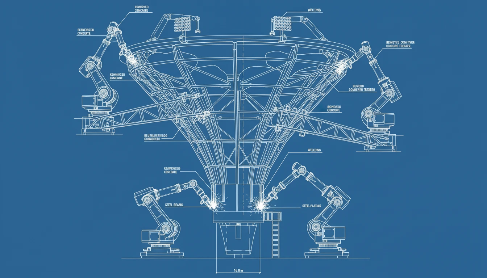

How to Build a Sales Funnel That Converts: A 7-Step Guide (2025)

You've heard the term "sales funnel" a thousand times. But do you actually have one? Or do you just have a website and hope people click "buy"?
A sales funnel is a deliberate, engineered path that guides a stranger toward becoming a customer. Building one isn't magic; it's mechanics. Here is your 7-step blueprint to building a funnel that actually converts.
Step 1: Define Your Buyer Persona
You can't sell to everyone. Be specific. Who is your ideal customer? What keeps them up at night? If you try to catch every fish in the sea, you'll catch none. Focus on the one fish you want.
Step 2: Create a Lead Magnet (The Hook)
No one gives you their email address for "updates." You need to trade value for their contact info. Create a Lead Magnet—a free resource that solves a specific, small problem.
- Examples: A checklist, a template, a 15-minute consultation, or a free trial.
Step 3: Build a Landing Page
This is where the trade happens. Your landing page has one job: get them to download the lead magnet. Remove the navigation menu. Remove the distractions. Just have a headline, some benefits, and a form.
Step 4: The "Tripwire" Offer (Optional but Powerful)
Once they sign up, offer them a low-cost product immediately (e.g., $7-$47). This changes the relationship from "subscriber" to "customer." It's not about profit; it's about breaking the psychological barrier of spending money with you.
Step 5: The Nurture Sequence (Email Automation)
Most people won't buy right away. That's okay. Set up an automated email sequence (5-7 emails) that delivers value, builds trust, and gently pivots to your core offer.
Step 6: The Core Offer (The Close)
This is your main product or service. Now that you've built trust and proven your expertise, ask for the sale. Be clear about the transformation you provide.
Step 7: Analyze and Optimize
Your first funnel won't be perfect. Look at the data. Where are people dropping off? Is your landing page converting at less than 20%? Change the headline. Are people opening emails but not clicking? Change the copy. Test, iterate, and improve.
Conclusion
Building a sales funnel is an asset that pays dividends forever. Once it's built, it works for you 24/7, generating leads and sales while you sleep. Start with a simple funnel today, and optimize as you grow.
Want to understand the theory behind this? Read our guide on What is a Sales Funnel?